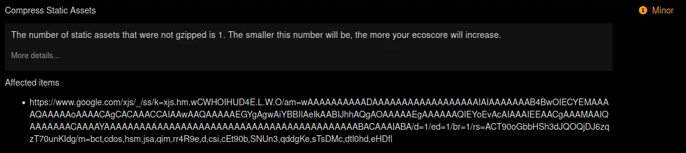
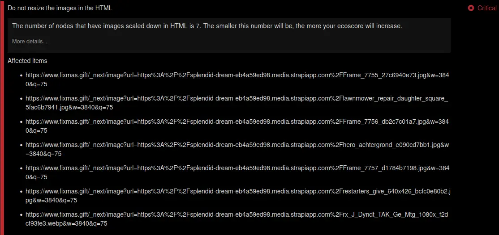

L’arrivée de la version finale du RGESN (Référentiel général d’écoconception de service numérique) pose plus que jamais la question de comment valider les différents critères. Il est parfois reproché à ces derniers d’être trop déclaratifs voire pas assez précis.
Nous aborderons ici les apports des outils de Greenspector Studio sur ces sujets. La possibilité d’intégrer ces outils à une PIC (Plateforme d’Intégration Continue) aide alors à aller vers de l’amélioration continue voire vers l’automatisation (forcément partielle) du contrôle de conformité. La validation exhaustive de la plupart des critères ne pourra pas être automatisée, de même que pour l’accessibilité numérique. Toutefois, il est souhaitable d’automatiser tout ce qui peut l’être, ne serait-ce que pour remonter des alertes en cas de dégradation.
Via cette démarche de vérification de la conformité par la mesure, nous verrons se dessiner une véritable stratégie de mesure.
Nous distinguerons par la suite deux types de critères :
- Ceux qui nécessitent de la mesure pour être validés
- Ceux pour lesquels la mesure permet d’aller plus loin et notamment au-delà du simple déclaratif
Préambule
Il est important avant toute chose de bien définir ce qu’est le périmètre de l’audit RGESN. Comme le nom l’indique, il est ici question d’un service numérique. Si cette notion n’est pour l’instant pas précisément définie dans le référentiel, il s’agit a priori d’un applicatif (site web, application mobile ou autre) qui sera audité, ainsi que l’ensemble de ses parcours utilisateurs représentatifs et fonctionnalités.
Cette précision est importante pour la mesure, afin de savoir s’il faut opter pour une mesure simple d’un échantillon d’écrans ou d’usages représentatifs (de type benchmark) ou pour un parcours utilisateur.
La définition de cet échantillon s’appuie souvent sur la liste des fonctionnalités mises à disposition ainsi que sur des statistiques d’usage.
Si un même service (faire des achats en ligne, consulter son compte en banque, regarder des vidéos, etc) se décline en plusieurs applicatifs (site web, application Android, application iOS), chaque applicatif devra faire l’objet d’un audit.
Si un applicatif comporte plusieurs parcours représentatifs, ils devront tous être pris en compte au cours de l’audit.
Il est possible de regarder ce qui se fait du côté de l’accessibilité pour aller plus loin sur le sujet de cette constitution d’échantillon : https://accessibilite.numerique.gouv.fr/obligations/evaluation-conformite/
Critères reposant sur de la mesure
1.4 – Le service numérique réalise-t-il régulièrement des revues pour s’assurer du respect de sa démarche d’écoconception ?
Il est question ici de prévoir une revue régulière via le RGESN, accompagnée d’audits de performance et de tests de charge.
Greenspector Studio permet aussi, en particulier via les mesures de parcours, de suivre la performance (en plus de l’énergie, des données transférées et des indicateurs environnementaux). La mesure d’écrans via l’outil de benchmark permet de vérifier automatiquement le respect de bonnes pratiques techniques. La mesure régulière sur les parcours et écrans identifiés peut donc permettre de valider en partie ce critère.
1.5 – Le service numérique s’est-il fixé des objectifs en matière de réduction ou de limitation de ses propres impacts environnementaux ?
Il sera ici possible de lister et suivre régulièrement différents indicateurs environnementaux. La méthodologie d’évaluation est disponible publiquement : https://blog.greenspector.com/wp-content/uploads/2024/05/Methodology_Greenspector_full_EN-Version-202405.pdf [PDF, 1,1 Mo, en anglais]
Sur chaque projet, les objectifs de réduction sont généralement définis dès les premières mesures, notamment via un budget environnemental. Nous y reviendrons dans un prochain article.
2.9 – Le service numérique a-t-il pris en compte les impacts environnementaux des composants d’interface prêts à l’emploi utilisés ?
La mesure des différents composants ou intégrations d’un même composant permet de comparer directement les résultats. Le dashboard proposé via Greenspector Studio ainsi que des fonctionnalités de l’atelier de mesure permettent une comparaison directe selon divers paramètres.
Il est possible pour cela d’imaginer une méthodologie proche de celle qui avait été utilisée précédemment pour comparer le poids des éléments d’une page web : https://blog.greenspector.com/fr/reduire-poids-page-web-quels-elements-plus-impactants/
2.10 – Le service numérique a-t-il pris en compte les impacts environnementaux des services tiers utilisés lors de leur sélection ?
La démarche est ici similaire à ce qui a été présenté ci-dessus pour les critères 2.8 et 2.9. En complément (nous y reviendrons plus loin), l’outil benchmark permet la vérification automatique de certaines bonnes pratiques techniques, ce qui peut être un gain de temps pour la validation de certains critères du RGESN (en particulier lorsqu’il est question de compression, de chargement progressif et autres).
3.1 – Le service numérique repose-t-il sur une architecture, des ressources ou des composants conçus pour réduire leurs propres impacts environnementaux ?
Via Greenspector Studio, différents composants ou choix d’intégration peuvent être comparés par la mesure, notamment via du A/B Testing ou du feature flipping.
4.3 – Le service numérique optimise-t-il le parcours de navigation pour chaque fonctionnalité principale ?
Comme indiqué dans les moyens de test et de contrôle pour ce critère, des indicateurs techniques doivent être définis pour les parcours identifiés. Il est alors souhaitable de définir un budget environnemental ainsi qu’une fréquence de mesure afin de suivre leur évolution dans le temps.
4.4 – Le service numérique permet-il à l’utilisateur de décider de l’activation d’un service tiers ?
La mesure est ici nécessaire pour renseigner le possible coût environnemental d’un service tiers.
Selon le cas, il sera possible d’automatiser l’activation du service-tiers ou de mesurer ses impacts lors de phases d’inactivité de l’utilisateur. En complément, le feature flipping permet d’isoler l’impact de certains composants et services tiers.
4.5 – Le service numérique utilise-t-il majoritairement des composants fonctionnels natifs du système d’exploitation, du navigateur ou du langage utilisé ?
Les composant fonctionnels non-natifs et natifs doivent être comparés et suivis via les ressources chargées et l’utilisation effective de celles-ci.
4.8 – Le service numérique limite-t-il le nombre des polices de caractères téléchargées ?
Le nombre des polices chargées et surtout leur poids doivent être vérifiés (et dans l’idéal suivis dans le temps), ce qui est possible via de la mesure.
4.9 – Le service numérique limite-t-il les requêtes serveur lors de la saisie utilisateur ?
Via un parcours automatisé, il est possible de reproduire la saisie par un utilisateur et, ainsi, de vérifier par la mesure que les requêtes générées respectent bien les seuils imposés par le RGESN (volume de données transférées et délai entre deux requêtes).
4.10 – Le service numérique informe-t-il l’utilisateur du format de saisie attendu, en évitant les requêtes serveur inutiles pour la soumission d’un formulaire ?
Via l’automatisation de la saisie d’un formulaire, il est possible de vérifier que les éléments renseignés sont bien contrôlés côté client avant envoi.
4.12 – Le service numérique indique-t-il à l’utilisateur que l’utilisation d’une fonctionnalité a des impacts environnementaux importants ?
Pour pouvoir informer l’utilisateur des impacts environnementaux d’une fonctionnalité, il est nécessaire d’évaluer ceux-ci via de la mesure.
4.15 – Le service numérique fournit-il à l’utilisateur un moyen de contrôle sur ses usages afin de suivre et de réduire les impacts environnementaux associés ?
L’affichage des impacts environnementaux ainsi que l’évaluation des gains associés à des possibilités de paramétrage nécessitent de la mesure.
6.1 – Le service numérique s’astreint-il à un poids maximum et une limite de requête par écran ?
La mesure est essentielle pour définir les seuils (en se basant sur le service existant et/ou sur des services similaires). En complément, il est important ici de suivre ces valeurs dans le temps.
Critères pour lesquels la mesure est préférable
2.1 – Le service numérique a-t-il défini la liste des profils de matériels que les utilisateurs vont pouvoir employer pour y accéder ?
Afin de valider ce critère, il est a minima attendu une liste des profils en question.
Toutefois, il est important ici de creuser davantage la notion d’utilisabilité en s’appuyant sur des mesures. En particulier, il peut s’agir de mesurer sur un échantillon de terminaux anciens pour quantifier l’impact sur la performance et l’énergie. Ainsi, la définition d’utilisabilité peut être précisée via ce qu’on considère comme une dégradation acceptable par rapport au cas nominal.
Ceci peut être fait de façon très basique : “sur tel terminal ancien, le parcours utilisateur peut bien être réalisé de bout en bout”.
Ou de façon plus poussée : “sur tel terminal ancien, le parcours utilisateur est effectué en moins de X minutes et la décharge de la batterie est inférieure à X mAh”.
Ces seuils peuvent être déterminés par rapport au cas nominal. Par exemple, on peut s’imposer que le parcours soit au maximum deux fois plus long ou deux fois plus impactant pour la batterie.
Greenspector Studio permet cela, notamment via la mise à disposition de terminaux aujourd’hui jugés comme anciens :
- Le téléphone Samsung S7 date de 2016, le S9 de 2018
- Selon les modèles, la tablette Pixel C date de 2016 ou 2017
Il est possible d’imaginer une démarche similaire pour les ordinateurs.
2.2 – Le service numérique est-il utilisable sur d’anciens modèles de terminaux ?
Voir critère 2.1.
2.3 – Le service numérique est-il utilisable via une connexion bas débit ou hors connexion ?
Pour les mesures avec Greenspector Studio, il est possible via le banc de mesure d’utiliser une connexion similaire à de la 3G.
Il est tout à fait envisageable de s’adapter pour réaliser des mesures hors connexion.
2.5 – Le service numérique s’adapte-t-il à différents types de terminaux d’affichage ?
Les mesures via Greenspector Studio permettent de vérifier que le parcours utilisateurs s’effectue correctement sur un ensemble de terminaux. En complément, des captures d’écran sont réalisées au début et à la fin de chaque étape de mesure, ce qui permet de contrôler la qualité de l’affichage.
2.7 – Le service numérique a-t-il prévu une stratégie de maintenance et de décommissionnement ?
La mesure permet ici, comme demandé dans le RGESN, de documenter les résultats de la stratégie de maintenance et de décommissionnement (en particulier dans le cas des fonctionnalités) via les gains obtenus selon différentes métriques ou indicateurs.
2.8 – Le service numérique impose-t-il à ses fournisseurs de garantir une démarche de réduction de leurs impacts environnementaux ?
La mesure permet de valider les engagements des fournisseurs, en leur transmettant les métriques et indicateurs obtenus, un dashboard détaillé voire les résultats de la vérification automatique de bonnes pratiques techniques (via un benchmark de page).
4.1 – Le service numérique comporte-t-il uniquement des animations, vidéos et sons dont la lecture automatique est désactivée ?
Sur les écrans et étapes contenant de tels éléments, l’impact sur les données transférées, la décharge de la batterie et le CPU sont directement identifiables via les outils Greenspector Studio.
Si nécessaire, des mesures en A/B Testing permettent de quantifier directement les gains liés à la désactivation de la lecture automatique.
4.2 – Le service numérique affiche-t-il uniquement des contenus sans défilement infini ?
Voir critère 4.1.
4.13 – Le service numérique limite-t-il le recours aux notifications, tout en laissant la possibilité à l’utilisateur de les désactiver ?
Les mesures via Greenspector Studio peuvent permettre de détecter et quantifier les surconsommations liées aux notifications. Les captures d’écran effectuées automatiquement en cours de mesure permettent d’identifier les notifications en question.
5.1 – Le service numérique utilise-t-il un format de fichier adapté au contenu et au contexte de visualisation de chaque image ?
La mesure, en particulier des données transférées, permet de détecter les images les plus volumineuses ainsi que l’impact du téléchargement d’un fichier. Partant de là, il est possible d’analyser de façon plus poussée ces surconsommations afin d’identifier si elles sont liées à leur format, leur compression ou leur redimensionnement dans le navigateur.
5.2 – Le service numérique propose-t-il des images dont le niveau de compression est adapté au contenu et au contexte de visualisation ?
Voir critère 5.1.
5.3 – Le service numérique utilise-t-il, pour chaque vidéo, une définition adaptée au contenu et au contexte de visualisation ?
Les éléments présentés plus haut pour le critère 5.1 peuvent tout à fait s’adapter pour d’autres types de contenus (vidéo et audio), en particulier pour ce qui est du format et du niveau de compression. En complément, pour ces médias, la mesure permet d’identifier les préchargements (qui sont là aussi à éviter, comme stipulé dans le critère 6.5 mentionné plus loin).
5.4 – Le service numérique propose-t-il des vidéos dont le mode de compression est efficace et adapté au contenu et au contexte de visualisation ?
Voir critère 5.3.
5.5 – Le service numérique propose-t-il un mode « écoute seule » pour ses vidéos ?
Via la mesure, il est possible de quantifier les gains résultant de l’utilisation du mode “écoute seule”.
5.6 – Le service numérique propose-t-il des contenus audios dont le mode de compression est adapté au contenu et au contexte d’écoute ?
Voir critère 5.3.
5.7 – Le service numérique utilise-t-il un format de fichier adapté au contenu et au contexte d’utilisation pour chaque document ?
Voir critère 5.3.
En complément, la mesure permet de comparer différentes modalités de mise à disposition d’un document en évaluant les impacts environnementaux selon différents cas d’utilisation possible (ouverture sur téléphone, en connexion dégradée, etc).
6.2 – Le service numérique utilise-t-il des mécanismes de mise en cache pour la totalité des contenus transférés dont il a le contrôle ?
Il est ici plus simple de vérifier la stratégie de cache par de la mesure (notamment en comparant les résultats obtenus lors du premier chargement avec les chargements ultérieurs voire lors de la poursuite de navigation sur d’autres pages). En complément, l’outil benchmark de Greenspector Studio vérifie automatiquement l’intégration des entêtes liées au cache.
6.3 – Le service numérique a-t-il mis en place des techniques de compression pour les ressources transférées dont il a le contrôle ?
Les surconsommations liées à la non-mise en place de la compression sont détectables via la mesure des données transférées (et indirectement de la performance). Via l’outil benchmark de Greenspector Studio, les éléments non-compressés sont automatiquement détectés et listés.

6.4 – Le service numérique affiche-t-il majoritairement des images dont les dimensions d’origine correspondent aux dimensions du contexte d’affichage ?
Les surconsommations liées au redimensionnement des images dans le navigateur sont détectables via la mesure des données transférées (et indirectement de la performance). Via l’outil benchmark de Greenspector Studio, les images concernées sont automatiquement détectées et listées.

6.5 – Le service numérique évite-t-il de déclencher le chargement de ressources et de contenus inutilisés pour chaque fonctionnalité ?
Les surconsommations liées au chargement de ressources inutilisées sont détectables via la mesure des données transférées (et indirectement de la performance). En complément, via l’outil benchmark de Greenspector Studio, les images qui ne bénéficient pas du lazy-loading (chargement progressif) sont automatiquement détectées et listées.
6.7 – Le service numérique héberge-t-il toutes les ressources statiques transférées dont il est l’émetteur sur un même domaine ?
L’outil benchmark de Greenspector Studio liste automatiquement la liste d’éléments statiques chargés depuis un domaine nécessitant l’envoi de cookies, ce qui facilite l’identification des domaines.
Construire sa stratégie de mesure
Dans l’optique d’un audit de conformité au RGESN (et pour son suivi dans temps), il apparaît donc essentiel de mettre en place des mesures. Ceci implique forcément de définir une stratégie de mesure composée des éléments suivants :
- Les éléments mesurés : pages ou parcours représentatifs
- Pour couvrir l’ensemble des fonctionnalités principales
- En se basant sur les statistiques d’usage
- Avec un échantillon suffisamment large pour être pertinent
- Les indicateurs collectés, en s’assurant d’avoir aussi bien des métriques techniques (mesurées directement) et des indicateurs environnementaux (donc calculés). Tout en mentionnant bien la méthodologie de projection environnementale.
- Associés à tout ou partie de ces indicateurs, un budget environnemental avec deux approches complémentaires :
- L’ambition : les valeurs que l’on veut atteindre
- Le palier : les valeurs qui permettent d’identifier des régressions via une dégradation trop importante
- Les appareils sur lesquels on souhaite mesurer :
- Des appareils représentatifs de ceux majoritairement utilisés par les usagers du service audité. Tout en s’assurant si possible de vérifier ainsi l’adaptation du service numérique au terminal d’affichage
- Des appareils plus anciens pour les critères liés à l’inclusion
- Les types de connexion à internet (avec un cas nominal mais aussi un cas dégradé pour le critère 2.3)
- La fréquence de mesure :
- Relativement élevée pour les conditions nominales, afin de suivre l’évolution dans le temps, quantifier les améliorations et détecter les dégradations
- Éventuellement plus espacés pour les tests sur terminaux anciens et/ou en connexion dégradée
Conclusion
Comme souvent dans une démarche de vérification de la conformité, il est impossible de vérifier automatiquement tous les critères. Toutefois, sur les 78 critères actuellement présentés dans le RGESN :
- 14 nécessitent des mesures
- 21 devraient s’appuyer sur des mesures, notamment pour appuyer la déclaration sur des indicateurs chiffrés et vérifiables
Au total, ce sont donc presque la moitié des critères qui peuvent (ou doivent) s’appuyer sur des mesures.
Au-delà de la vérification ponctuelle de conformité, ces mesures devraient être automatisées dans une logique d’amélioration continue.
Tout ceci est évidemment possible avec Greenspector Studio.
L’arrivée du RGESN et la volonté de l’appliquer aussi largement que possible renforcent notre conviction de concilier bonnes pratiques et mesures afin de réduire les impacts (notamment environnementaux) des services numériques.